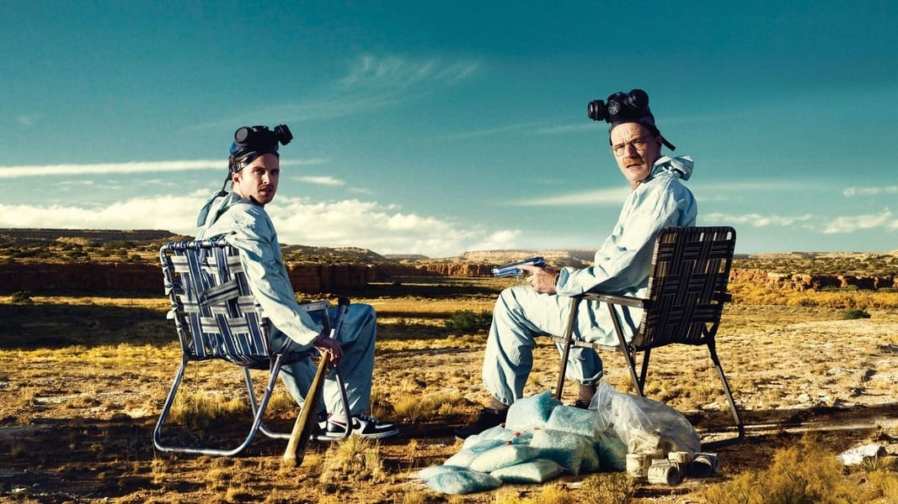
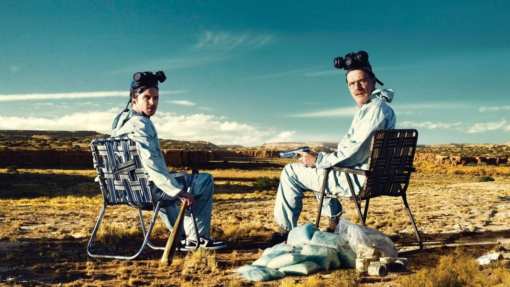

收藏
36800
点赞
128666
转发
14159
新墨西哥州的高中化学老师沃尔特·H·怀特（布莱恩·科兰斯顿 Bryan Cranston 饰）是拮据家庭的唯一经济来源。他大半生安分守己，兢兢业业，却在 50 岁生日之际突然得知自己罹患肺癌晚期的噩耗，原本便不甚顺意的人生顿时雪上加霜。为了保障怀孕的妻子斯凯勒（安娜·冈 Anna Gunn 饰）和残疾的儿子小沃特能在自己死后衣食无忧，沃尔特决意铤而走险。他主动找到曾经的学生、而今的毒贩小混混杰西·平克曼（亚伦·保尔 Aaron Paul 饰）谈合作，并运用娴熟高超的化学技术提炼出高纯度冰毒交给后者贩售。孰料事态的发展却在平克曼带回毒品供销商疯狂小八及其表弟后急转直下，沃尔特的人生也由此彻底步向失控。他被迫开始了教书与制毒的双重生活，逐渐坠落至万劫不复的深渊。